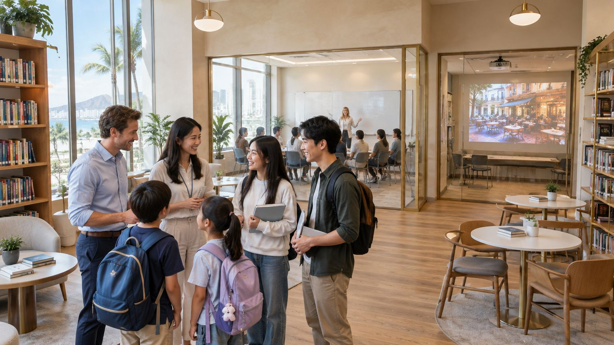
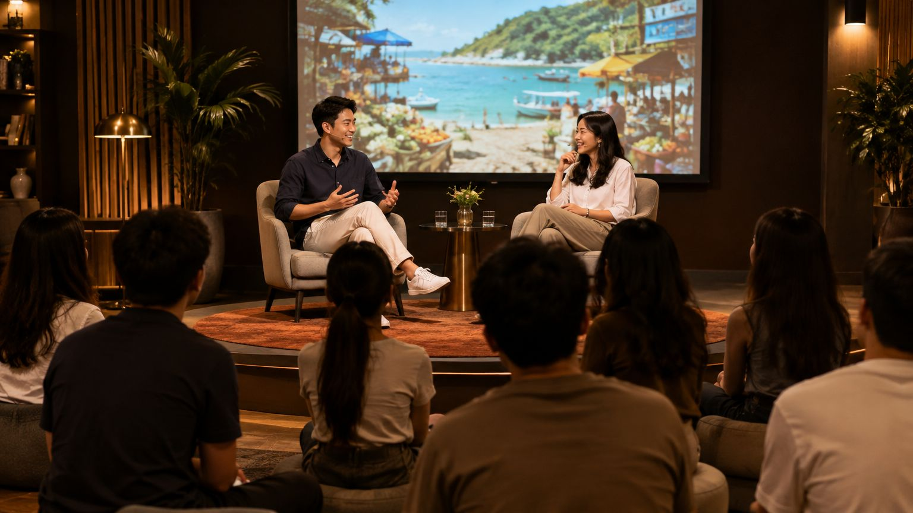
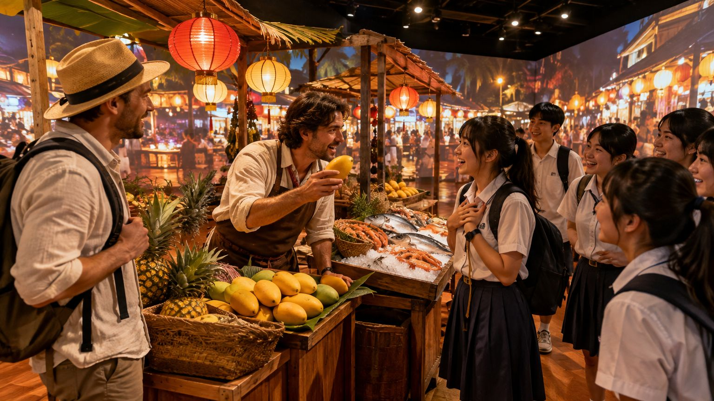
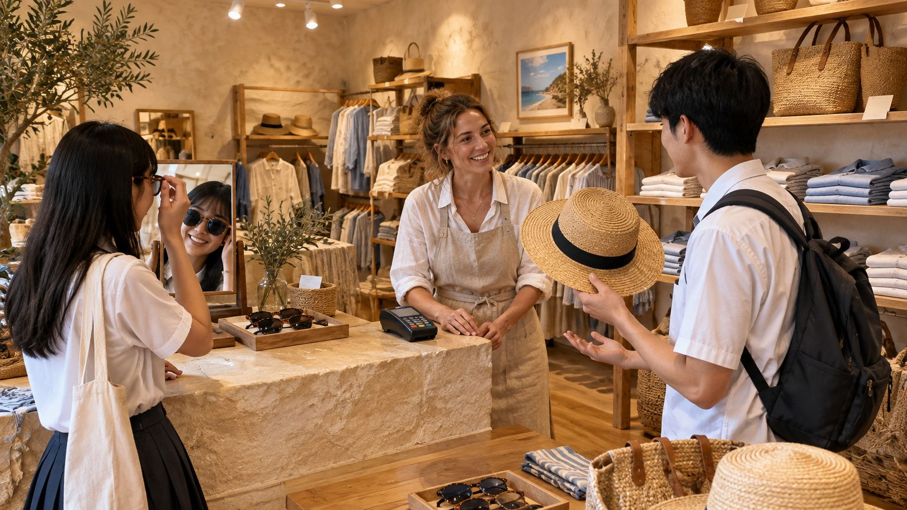
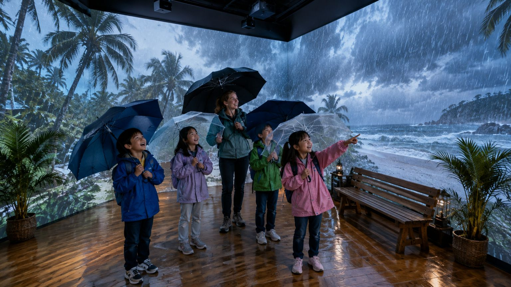
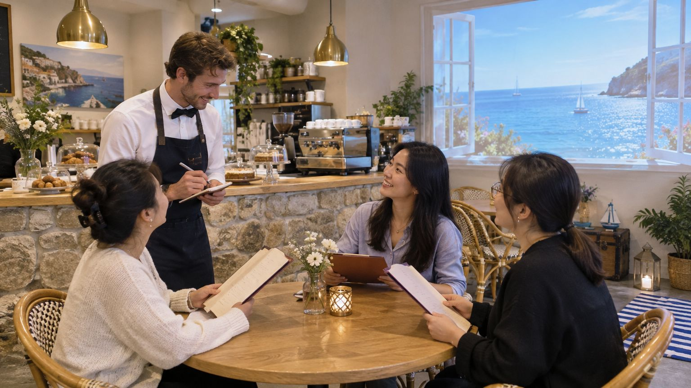
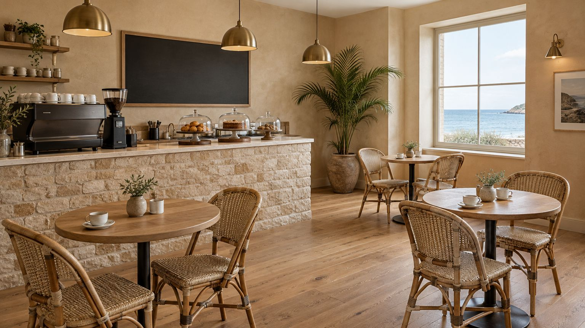

Bargaining · Food · Numbers讲价 · 美食 · 数字
The night market夜市
Lanterns, stalls and loud stallholders, played by our actors.灯笼、摊位和热情的摊主——由我们的演员扮演。

No word lists to memorise. Each day opens with a live talk on stage. Then the classroom becomes the scene: actors play out the topic all around the students, and the students step into it themselves. This is immersive learning.不死记硬背。每天从一场现场对谈开始；接着教室变成真实场景，外籍演员在学员身边演绎当天的主题，学员再亲自走进场景。这就是沉浸式学习。
Each session runs from 09:30 to 16:00, with an hour for lunch, and follows the same route through the school. Today's topic in the examples below is shopping.每次课程从 09:30 持续到 16:00，中午休息一小时，每天都沿着同样的路线走过学校。以下示例的当天主题是"购物"。

Two hosts sit down on stage and talk the topic through live, in Chinese, like a TED talk or a podcast recorded in front of an audience. They cover the mistakes Chinese speakers make, the phrases natives use most, and the logic behind them, with English woven into the conversation. Students can put their hands up and ask.两位主持人在舞台上现场对谈，就像一场 TED 演讲或现场录制的播客。他们用中文聊当天的主题：中国人常犯的错误、母语者最常用的表达，以及背后的逻辑，英文表达自然穿插其中。学员可以随时举手提问。
"这个多少钱"别说 This how much money，要说 How much is this?

The classroom becomes the scene. Native-speaking actors play it out live, all around the students. They talk to the audience, ask questions and pull students into the story, so everyone hears real English at real speed.教室变成真实场景。外籍演员在学员身边现场演绎当天的情景。他们会和观众说话、向学员提问、把学员拉进剧情，让每个人听到真实语速的地道英语。
Today: a tourist haggles at a Sanya night market, then the stallholder turns to a student: 今天：游客在三亚夜市讲价，摊主突然转向一位学员："What do you think, is fifty a good price?"

After lunch, the students take the roles. The actors stay in character and react to whatever students say, so every conversation is different. Students buy, ask, exchange and pay, first with hints, then on their own.午饭后，轮到学员扮演角色。演员始终保持角色，根据学员说的话即兴回应，所以每段对话都不一样。学员完成购买、询问、换货和付款——先有提示，再独立完成。
Do you have this in a bigger size? · Can I pay by WeChat?
Each student faces one unscripted moment alone with an actor: the size is sold out, the price is wrong, the stall is closing. Handle it in English while classmates cheer, and walk out with the day's "I can" card. Parents get a note on what was covered.每位学员单独面对演员的一个即兴"意外"：尺码卖完了、价格算错了、摊位要收摊了。在同学的加油声中用英语化解，带着当天的"我能做到"卡片自信离开。家长会收到当天学习内容的反馈。
Today I can ask the price, ask for another size and pay politely, even when something goes wrong.今天我能询问价格、要求换尺码并礼貌付款——即使出了意外也不慌。
In immersive learning, the set, the light, the sound and the actors change with every topic. Students don't sit at desks and imagine; they walk into the story and live it in English.在沉浸式学习中，布景、灯光、声音和演员随主题而变。学员不用坐在课桌前想象，而是走进故事，用英语亲身经历。
Lanterns, stalls and loud stallholders, played by our actors.灯笼、摊位和热情的摊主——由我们的演员扮演。
Teachers play shopkeepers; students buy, ask and exchange.老师扮演店员，学员购买、询问和换货。

Projected rain and thunder on every wall for the weather topic.四面墙投影暴雨和雷声，用于天气主题。

Menus, a counter and a sea view for food and drink topics.菜单、吧台和海景，用于餐饮主题。
A resort reception for hospitality and travel topics.度假酒店前台，用于酒店服务与旅行主题。
Choose a topic. The live talk is in Chinese so the logic is clear; English translations are in grey.选择一个主题查看。现场对谈用中文进行，确保逻辑清晰易懂。
买东西的时候，很多人会直接说 I want this. 语法没错，但听起来有点像命令。When shopping, many people say "I want this." It's grammatical, but it sounds like an order.
对。母语者更常说 Could I get this one? 或者 I'll take this one.Right. Native speakers more often say "Could I get this one?" or "I'll take this one."
还有"这个多少钱"，别逐字翻成 This how much money? 要说 How much is this?And for 这个多少钱, don't translate word by word. Say "How much is this?"
想换尺码就问 Do you have this in a bigger size?To change size, ask "Do you have this in a bigger size?"
The logic背后的逻辑 · English questions move the verb forward: How much + is + this? And "could" turns a demand into a polite request.英语疑问句要把动词提前：How much + is + this？用 could 能把"要求"变成礼貌的"请求"。
Actors play a pushy stallholder and an undecided tourist. Mid-scene, the stallholder asks the audience which colour suits the tourist.演员扮演热情的摊主和犹豫不决的游客。演到一半，摊主转身问观众：哪个颜色更适合这位游客？
Each student buys three items from an actor in character and exchanges one.每位学员向入戏的演员购买三件商品，并换掉其中一件。
"今天很热"，很多人说 Today is very hot. 能听懂，但母语者更常说 It's really hot today.For 今天很热 many people say "Today is very hot." Natives more often say "It's really hot today."
因为英语用 it 当天气的主语：It's sunny. It's windy.Because English uses "it" as the subject for weather: "It's sunny." "It's windy."
还有"今天下雨"，别说 Today is rain，要说 It's raining today.And for 今天下雨, not "Today is rain" but "It's raining today."
在三亚一定要会这句：There's a typhoon warning.In Sanya you definitely need this one: "There's a typhoon warning."
The logic背后的逻辑 · English sentences need a subject, so weather uses "it". "Rain" is also a verb, so rain falling now is "is raining".英语句子必须有主语，所以天气用 it 开头。rain 也是动词，正在下雨要用 is raining。
As a storm rolls across the walls, two neighbours argue about their beach plans, then ask the students what the forecast says.暴风雨在四面墙上袭来，两位邻居为海边计划争论，然后问学员：天气预报怎么说？
In the storm room, rain and thunder roll in while students describe the weather, then change their weekend plans.在暴雨教室里，雨声雷声响起，学员描述天气并调整周末计划。
点餐时很多人说 Give me a coffee. 在英语里听起来不太礼貌。When ordering, many people say "Give me a coffee." In English that sounds a little rude.
更自然的是 Can I have a coffee, please? 或 I'd like a coffee.More natural: "Can I have a coffee, please?" or "I'd like a coffee."
不知道点什么，可以问 What do you recommend?If you don't know what to order, ask "What do you recommend?"
买单别说 Pay money，要说 Could we have the bill, please?To pay, not "Pay money" but "Could we have the bill, please?"
The logic背后的逻辑 · Chinese orders with "give me"; English orders by asking. "Can I have…?" asks permission, which is what makes it polite.中文点餐习惯说"给我……"，英语则用提问的方式："我可以要……吗？"——征求许可的语气才显得礼貌。
A waiter serves a very fussy customer, then turns to the students: "And what can I get for you?"服务员应付一位挑剔的顾客，然后转向学员："那您想点些什么？"
At the café, students order from the waiter, ask a question about a dish and pay.在咖啡馆主题教室里，学员点餐、询问菜品并结账。
Every session is a full day on one topic. Topics, talk length and practice tasks are adjusted for each group.每次课程都是围绕一个主题的一整天。主题内容、讲解时长和练习任务会根据不同人群调整。
A shorter day with a picture-based live talk, then plenty of role-play and games in the immersive room.一天的时长更短，讲解配有图片，更多时间在沉浸式教室里做角色扮演和游戏。
Everyday, school and travel situations, building the speaking that exam classes leave out.日常、校园和出行场景，补上应试课堂缺少的口语能力。
For travel, making friends and meeting visitors in Sanya.面向旅行、交友以及在三亚与外国游客打交道。
Check-in, complaints, recommendations and phone calls for hotel, retail and tourism staff.面向酒店、零售及旅游从业者：入住接待、处理投诉、推荐服务和电话英语。
Topics come round again as students move up the CEFR levels used by Cambridge English and IELTS. This is how the shopping topic grows.随着学员在 CEFR 级别（剑桥英语与雅思通用标准）中进阶，主题会循环出现并逐步加深。以下以"购物"为例。
| Level级别 | Shopping at this level该级别的"购物"主题 | Matching exams对应考试 |
|---|---|---|
| Pre-A1 | Name items and colours, say "this one, please"说出商品和颜色，会说 "this one, please" | Cambridge YLE Starters |
| A1 | Ask the price and pay询问价格并付款 | Cambridge YLE Movers |
| A2 | Ask for another size or colour and compare two items要求换尺码或颜色，比较两件商品 | YLE Flyers · A2 Key (KET) |
| B1 | Return an item and explain what is wrong with it退换商品并说明问题 | B1 Preliminary (PET) · IELTS 4.0–5.0 |
| B2 | Negotiate a discount and discuss value for money讨价还价，讨论性价比 | B2 First (FCE) · IELTS 5.5–6.5 |
| C1 | Handle a complaint diplomatically and agree a solution得体地处理投诉并协商解决方案 | C1 Advanced · IELTS 7.0+ |
English-major graduates who know exactly where Chinese speakers go wrong. On stage, two of them talk it through live and explain why in plain Chinese.英语专业出身，清楚中国学生容易在哪里出错，两人在台上现场对谈，用通俗的中文讲清原因。
They perform each scene and stay in character as stallholders, waiters and hotel guests, reacting to whatever students say. All hold a degree, a CELTA or TEFL certificate and a Chinese work permit.他们演绎每个场景，始终以摊主、服务员、酒店客人等角色回应学员说的每一句话。均持有学位、CELTA 或 TEFL 证书及中国工作许可。
Book single days, or a block of days to cover the full topic cycle. Beijing time.可单天预约，也可连续预约多天完成完整的主题循环。北京时间。
| Group班级 | When上课日期 | Hours时间 |
|---|---|---|
| Kids (7–12)少儿班（7–12 岁） | Sat, Sun & school holidays周六、周日及寒暑假 | 09:30–15:00 |
| Teens (13–17)青少年班（13–17 岁） | Sat, Sun & school holidays周六、周日及寒暑假 | 09:30–16:00 |
| Everyday English (adults)生活英语（成人） | Mon–Sat周一至周六 | 09:30–16:00 |
| Hospitality English酒店旅游英语 | Mon–Fri, or at your hotel周一至周五，或上门 | 09:30–16:00 |
Every day includes a one-hour lunch break, 12:00–13:00. Sample timetable; company groups can book their own topic days.每天 12:00–13:00 午休一小时。示例课表；企业团体可预约专属主题日。
No word lists. Students learn whole phrases inside one situation, understand why they work, and use them the same day. Phrases come back naturally when topics repeat at higher levels.不需要背单词表。学员在一个场景中学习整句表达，理解其中的逻辑，并在当天用出来。主题在更高级别循环时，这些表达会自然再次出现。
No, students are part of every scene. Actors perform around them, speak to them and give them roles. Nobody just sits and watches, and shy students start with small lines before taking bigger parts.不是，学员就是场景中的一员。演员在学员身边表演、和他们对话、给他们分配角色。没有人只是坐着看；性格内向的学员可以从简单的台词开始，再慢慢承担更多戏份。
Logic is easiest to understand in your own language, and a live conversation between two people is easier to follow than a lecture. Once students know why English says something a certain way, the rest of the day is in English.用母语理解逻辑最快最透彻，两个人的现场对话也比单人讲课更容易听进去。明白了英语"为什么这样说"之后，当天其余环节都用英语进行。
The day changes pace often: listening in the morning, moving around the set before lunch, an hour's break, then hands-on role-play and the final challenge. Children's days are shorter and finish at 15:00.一天的节奏不断变化：上午听对谈，午饭前在布景中走动体验，午休一小时，下午动手角色扮演并迎接终极挑战。少儿班时间更短，15:00 结束。
Each day stands on its own, so students can join any day. Missed topics can be made up the next time they come round, or in another group at the same level.每天的主题相对独立，任何一天都可以加入。错过的主题可在下次循环时补上，或到同级别的其他班级补课。
Yes. Because the explanation is in Chinese, beginners understand from day one. Their practice tasks are simpler: pointing, single words and short phrases.可以。因为讲解用中文，零基础的孩子从第一天起就能听懂。他们的练习任务会更简单：指认、单词和短句。
Yes. Book a free topic day by WeChat, phone or the form below. We'll have a short chat first to place you in the right group.可以。通过微信、电话或下方表单预约一次免费主题体验日。我们会先简单交流，安排到合适的班级。
Yes. We build topic days around your workplace, such as hotel check-in, handling complaints or giving recommendations, and can teach on site.可以。我们根据贵公司的工作场景定制主题日，如酒店入住、处理投诉或推荐服务，并可上门授课。

Message us on WeChat, call, or fill in the form and send it to us.欢迎微信或电话联系我们，也可填写表单后发送给我们。